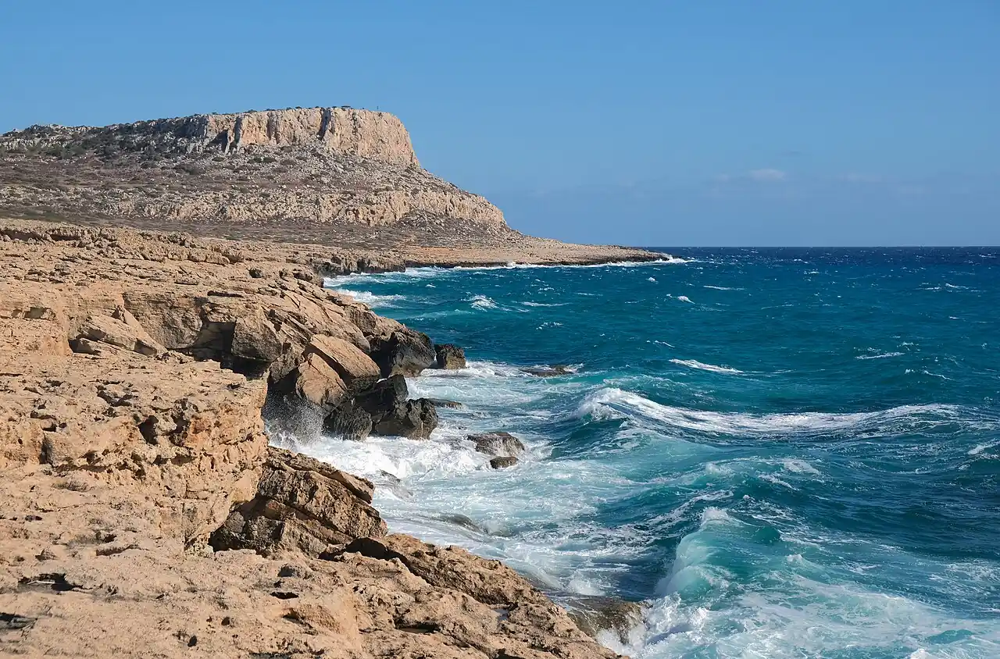

Cap Greco
Ayia Napa, Chypre · snorkeling, baignade

Parc naturel à l’extrémité sud-est de Chypre, avec falaises, grottes marines et arches. L’eau très claire se prête au snorkeling depuis les échelles et les criques rocheuses.
- Lieu
- Ayia Napa, Chypre
- Niveau
- Intermédiaire
- Activités
- snorkeling, baignade
- Type d'eau
- Mer / océan
- Coordonnées
- 34.96, 34.08 (position approximative du secteur)
Dangers à connaître
- Sauts depuis les falaises : risque de blessures graves, vérifie profondeur et remontée.
- Houle et courants autour du cap par vent fort.
Le conseil d'Ocean Buddy
Nage près des échelles d’accès et repère ta sortie avant d’entrer : la côte est faite de falaises.
Ouvrir dans Ocean Buddy Télécharger sur l'App Store
Source : Fiche Ocean Buddy · septembre 2026 · à vérifier localement.